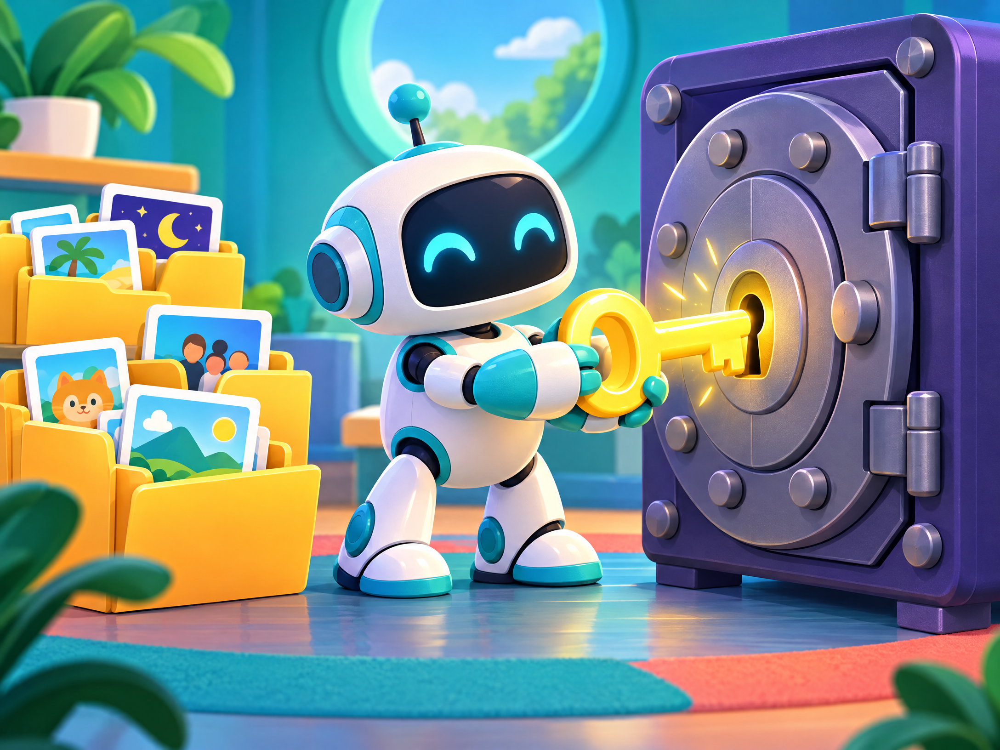

Privacy by default
No tokens, passwords, webhooks, or environment files belong in the template.
OPEN • SIMPLE • SAFE
A public starter template for durable rules, preferences, handoffs, tasks, decisions, and events — without shipping personal data or secrets.
Download templates v0.2.0THE IDEA
Face Muse separates durable memory from current state, event history, media, archives, and credentials. Copy the template, fill in the placeholders, and keep the rules visible and reviewable.

No tokens, passwords, webhooks, or environment files belong in the template.
Style presets can change tone and verbosity without overriding shared safety rules.
SUPPORT THE PROJECT
Payments are protected behind a quick 18+ age confirmation. Community access is always open.
Support through the recurring PayPal plan.
Support the work directly through GitHub.
Follow the project and connect with the community.
QUICKSTART
ONE QUICK CHECK
Payment options on this page are intended for adults. Confirm your age to continue.
Your choice is saved only in this browser. No personal data is collected.